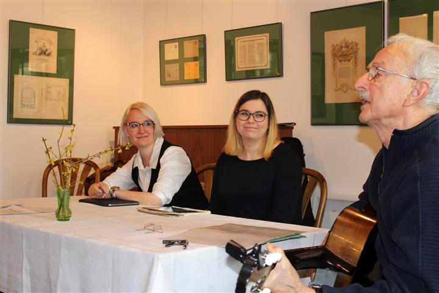

Suhl/Rohr/Meiningen. Die Südthüringer Literaturwerkstatt mit Autorinnen und Autoren zumeist aus der Region geht am Wochenende 28. bis 30. März 2025 in ihre inzwischen 36. Runde. Seit 1990 schaffen es die Organisatoren vom Südthüringer Literaturverein, Schreibende zu einer Wochenendwerkstatt zusammenzubringen und von hochkarätigen Lektoren beraten zu lassen. Die insgesamt 29 Schreibenden werden dabei in Rohr betreut von André Schinkel aus Halle (Prosagruppe), Christine Hansmann-Retzlaff aus Weimar (Lyrikgruppe) und Natalie Ewald aus Jena (Jugendgruppe). Am Sonntagvormittag, dem 30. März, ab 10 Uhr haben Interessenten die Möglichkeit, die besten Resultate aus dieser wirklichen Schreibwerkstatt (d.h. neue Texte entstehen vor Ort) in der Galerie „ada" in Meiningen kennenzulernen.
Seit einigen Jahren stellen die hiesigen Autoren ihre Werkstatt-Tage unter ein inhaltliches Motto. Diesmal ist es „Glatteis". Wer dabei auch Querverbindungen zur aktuellen politischen Lage erwartet, dürfte nicht ganz falsch liegen. Allerdings weisen die entstehenden Texte meist deutlich über jegliche inhaltliche Einschränkung hinaus. Dafür sorgen vor allem die Anregungen und gestellten Aufgaben der Lektoren. Zur Matinee werden die Texte von diesen auch vorgestellt, von den Autorinnen und Autoren selbst gelesen und musikalisch bereichert von Beiträgen des Suhler Liedermachers Bernd Friedrich. Der Eintritt zu der Lesung in der Galerie „ada" ist frei.
Die Südthüringer Literaturwerkstatt wird seit Jahren gefördert von der Kulturstiftung Thüringen. Werkstatt-Domizil ist zum zweiten Mal das Hotel Zum Kloster in Rohr. Nach Schließung des Literaturmuseums Baumbachhaus gelang es, die Verantwortlichen der Galerie „ada" als Partner für die Abschlusslesung zu gewinnen. Interessenten sind sehr herzlich eingeladen, sich an diesem Sonntagmorgen selbst ein Bild von ganz frisch entstandener Literatur aus Südthüringen zu machen.
